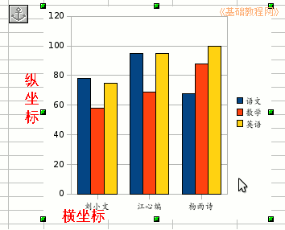
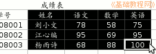
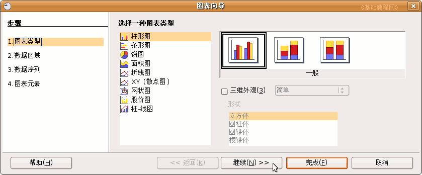
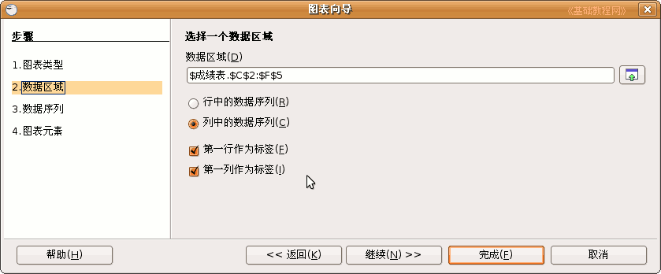
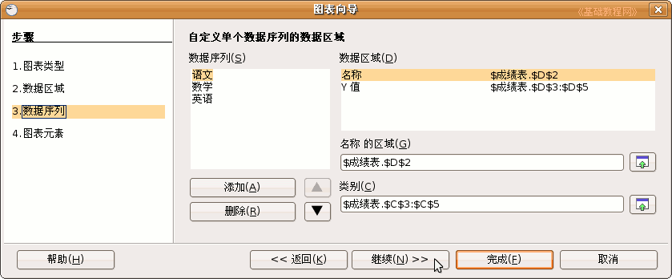
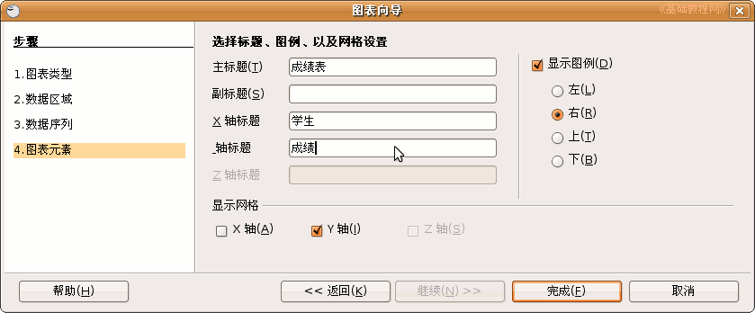
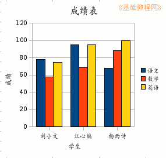

OpenOffice.org 教程之 Calc 电子表格
作者：TeliuTe 来源：基础教程网
六、插入图表 返回目录 下一课这一节我们来学习图表，用图像来显示数据，更让人一目了然，便于对比和区分，下面我们来看一个练习；
1、启动Calc
1）点击点菜单“应用程序－办公－OpenOffice.org 电子表格”；
2）点菜单“文件－打开”命令，在自己的文件夹中找到上次保存的“成绩表”文件，打开它；
2、查看表格
1）在这个表格中，有三个同学，每个同学又有“语数外”三门成绩，可以做成一个图像，然后对比一下；
2）图表一般用坐标轴来表示，横坐标是X轴，纵坐标是Y轴，还有类似地图的图例和标题等，下面我们来看一下怎么制作一个图表；

3、创建图表
1）从姓名开始一直拖动到右下角的100，框选中这些有用的数据，序号和学号可以不必要；

2）点菜单“插入－图表”命令，弹出一个“图表向导”面板；
3）第一步是选择图表类型，一般有柱形、条形、饼图等，这儿点“继续”按钮，用默认的柱形图；

4）第二步是数据区域，我们选中的是从“姓名－100”这一块，每个学生一块，如果选“行中的数据”就是按学科，
把下面两个“第一行、列”标签打勾，然后点“继续”；

5）第三页是自定义数据区域，如果多了，可以在中间选择后删除，点“继续”；

6）第四页是标题图例，在中间分别填上“成绩表”、“学生”、“成绩”，“副标题”先空着，点“完成”；

这样就创建好一个图表，每个一块代表一个同学，可以从颜色上来比较三个同学的成绩；

保存一下文件；
7）移动图表的方法是，把鼠标移到图表里，鼠标指针变成手形的时候，就可以拖动，
删除图表的方法是，空白处点一下，再点图表选中后，按“Ｄelete”键就可以删除，
修改图表的方法是，在图表上点右键选“编辑”，然后再点右键，就可以看到各个图标内容了；
本节学习了Calc里创建图表的基本操作，如果你成功地完成了练习，请继续学习下一课内容；
本教程由86团学校TeliuTe制作|著作权所有
基础教程网：http://teliute.org
美丽的校园……
转载和引用本站内容，请保留版权信息和本站链接。